WHAT'S NEW IN AVENGERLAND
2020
October 29th
Identified by Geoff Dodd
DIAL 999: Death Ride
The Burroughs, Hendon, London NW4

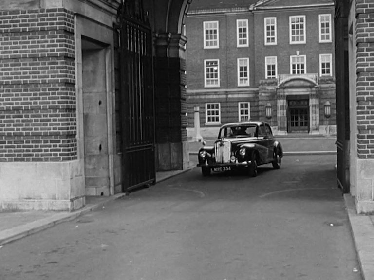

September 14th
Identified by Hans Groot
THE SAINT: The Angel's Eye (Leslie Norman:
March 1966)
Spiegelgracht, Amsterdam
- After arriving at Schiphol Airport Simon Templar and Mable and Tom
Upwater take a taxi to their hotel through the narrow streets of
Amsterdam.
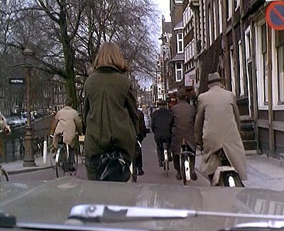
August 18th
Identified by Bryn
Willetts - an excellent find!
B24: Stags End, Gaddesden Lane,
Hemel Hempstead

RANDALL AND HOPKIRK [DECEASED]:
The Smile Behind the Veil
(Cyril Frankel: October 1968)
Hooper Jeff is parked up, consulting a map, opposite the Stonehurst
entrance. Brooks leaves in his Hillman Minx.
July 7th
B23: Barnes Lodge, Kings Langley
(demolished 1975)

THE SAINT: The Desperate Diplomat (Ray
Austin: 1968)
Simon
Templar (Roger Moore) and Sara (Susan Farmer) arrive in at the house
near Zurich where Jason Douglas is hiding. Unfortunately, Walter Faber
(Robert Hardy) is already waiting for them.
THE BARON: Something for a Rainy Day (Cyril
Frankel: November 1965)
Max
Holder and Lucas (Derek Newark) are holding Ann Seldon at the Chateau
Celeistine. Mannering (Steve Forrest) and Cordelia (Sue Lloyd) attempt
to rescue Anne, but The Baron is confronted by a vicious guard dog and
is captured by Lucas.
July 2nd
Identified by Geoff
Dodd
H80: East Burnham
House, Thompkins Lane, Burnham (destroyed by fire in 1977)

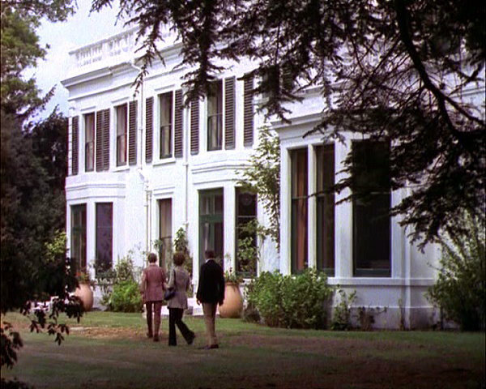
MAN IN A SUITCASE: Night Flight to Andorra (Freddie
Francis: December 1967)
The villa that McGill and his band of mercenaries are trying to rob.
FROM A BIRDS EYE VIEW: The Sicilian Affair (John
Robbins: Summer 1969)
The Sicilian villa.
THE ZOO GANG: The Counterfeit Trap (John
Hough: early 1973)
Manouche
(Lilli Palmer) and Tommy (John Mills) visit Charles Gautier (Peter
Cushing) and Brigitte (Jacqueline Pearce) at their new house.
July 1st
Identified by Alan Watt
former Shire Hall, The Forbury,
Reading, Berkshire
THE SECRET SERVICE: A Case for The Bishop (Alan
Perry: Autumn 1968)
The Dreisenberg Embassy, London
June 29th
Identified by Andrew
Staton
Brooklyn Bridge, New York City, USA
THE SECRET SERVICE: A Question of Miracles (Ken
Turner: Autumn 1968)
In New York the sale of 10 British desalination plants is being
discussed.
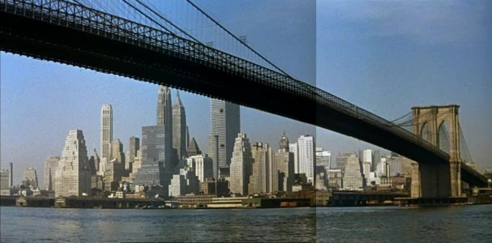
Haymarket, London SW1
THE SECRET SERVICE: A Question of Miracles (Ken
Turner: Autumn 1968)
In a New York office
(New Zealand House) the sale of 10 British desalination
plants is being discussed.
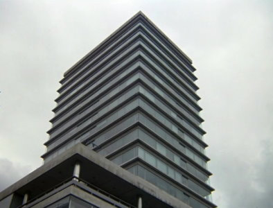
June 20th
DIAL 999 location
page up and running.
May 27th Identified by Thomas
Gibson
Bethnal Green Road, Bethnal Green,
London E2
GIDEON’S WAY: Boy With Gun (Jeremy Summers:
May 1965)
Chris Kirk (Howard Knight) finds a phone box and calls his father about
the accidental shooting.

May 25th Identified by Andrew
Chilcott
Waterlow Park, Highgate Hill,
London N6
GIDEON’S WAY: Morna (Cyril Frankel, October
1964)
Gideon Michael Usher (Norman Bowler) arranges to meet Morna (Angela
Douglas) in the park by their ‘special’ bench.

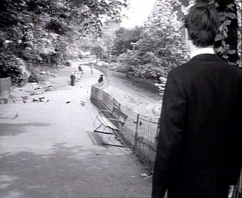
Pennington Street, London E1
GIDEON’S WAY: Boy With Gun (Jeremy Summers:
May 1965):
Chris Kirk (Howard Knight) sees some lorries at a greasy spoon and
hides inside one of them.


May 4th Identified by Allen
Dace
Motcomb Street, London SW1
DANGER MAN: The Sisters (Seth Holt: ??)
From the apartment window Gerda Sandor sees the police arrive to
surround the building (corner
of Lowndes Street and Motcomb Street).
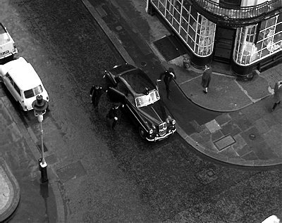
May 2nd Identified by Geoff
Dodd
F57: Gordonbush House (formerly
Egypt End) on Egypt Lane, Farnham Common
THE BARON: Red Horse, Red Rider (John
Moxey: July/August 1965)
The Baron arrives at the home of Olmira. They have been followed by
Salar and Shamir who wait outside in a Jeep. After a while they drive a
little further down the road.
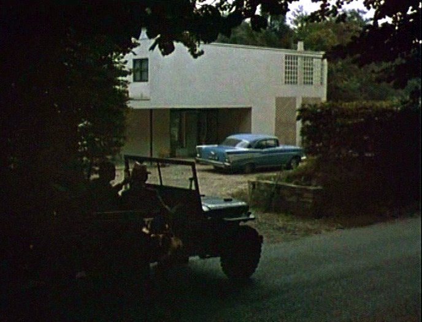
April 14th
Cannes, Alpes-Maritimes, France
DEPARTMENT S: A Cellar Full of Silence (John
Gilling: June 1968)
Stewart Sullivan goes to meet Sir Curtis at a holiday resort where he
is attending a conference and discuss the case.

April 10th - Identified by Patricia
Carpenter and Elaine
Ballard
Stackpole Quay, Pembrokeshire, Wales
DANGER MAN: The Brothers (Charles Frend:
????)
Secluded harbour on Sicily (mirror
image)
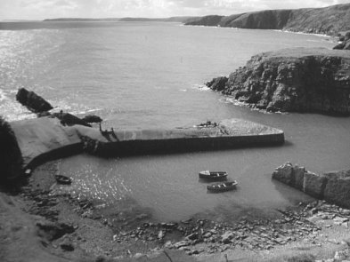
O29: Earl's Farm, Earls Road, Ridge
THE AVENGERS: The Hidden Tiger
(Sidney Hayers:
January 1967)
It is late at night and
Mrs Peel looks across the fields to the Chippenham manor Experimental
Husbandry
Farm and sees that the lights are still on in the laboratory (Earl's
Farm seen from Deeves Hall Lane).
and
THE AVENGERS: From Venus With Love (Robert
Day: October 1966)
Mrs Peel (Diana Rigg) looses the
strange light after attempting to follow it in her Lotus. See sees a
light
source in a farm opposite and sets off on foot to investigate (Earl's
Farm seen from Deeves Hall Lane).

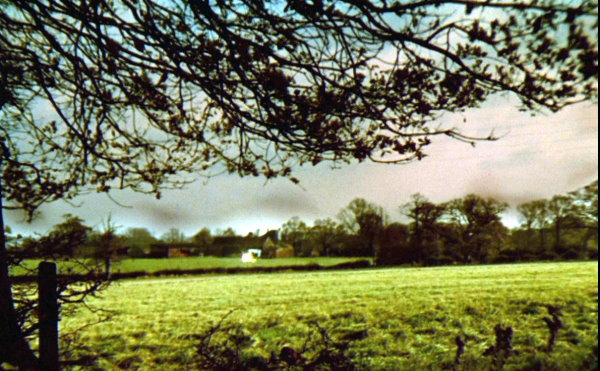
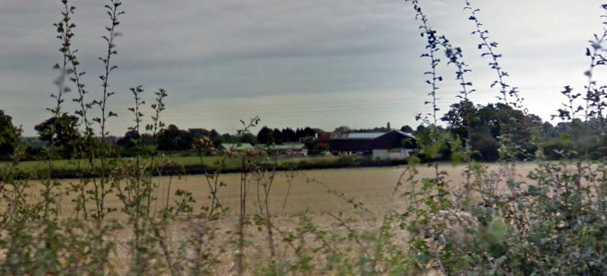
Identified by Geoff Dodd,
April 3rd
THE AVENGERS: A Sense of History (Peter Graham
Scott: January 1966)
Henshaw's Blind Asylum, Boyer
Street, Old Trafford, Greater Manchester (demolished 1972)
-'St. Bodes'.
An image takes from:
Film:
MANDY (1952)
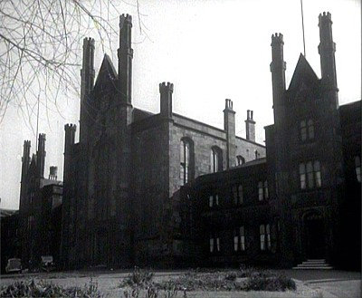
THE SAINT: The Man Who Could not Die (Roger
Moore, May 1965)
Warwick Farm
Racecourse, Warwick Farm, Sydney, New South Wales,
Australia
Simon Templar is at a polo match where he is to meet Nigel
Perry (footage from newsreel played under episode title, transposed
left to right)

THE SAINT: The Man Who Could not Die (Roger
Moore, May 1965)
Roehampton Polo Club (now The
Roehampton Club), Roehampton Lane, Roehamton, London SW15
Simon Templar is
at a polo match where he is to meet Nigel Perry. They watch as Miles
Hallin
scores a point (newsreel footage, transposed left to right).
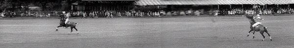
Identified by Philip
Doyle, Sepember 2020
THE SAINT: The Old Treasure Story (Roger
Moore, May/June 1965)
English Harbour, Antigua, Antigua
and Barbuda: Duncan Rawl’s yacht waits at the dock for the
other treasure hunters to arrive.
https://youtu.be/0M8Z12B-81A
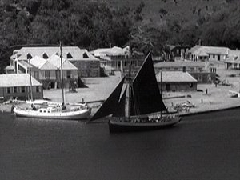
Antigua, Antigua and Barbuda:
Rawl’s yacht sets out to Corda Cay.

THE CHAMPIONS: Desert Journey (Paul Dickson:
Spring 1968)
The
Bey of El Ham is kidnapped and conveyed across the desert of his
homeland in a Jeep by Sharron and Craig. The Bey is shot by his
political opponents when he escapes from The Champions. The trio call
on local Bedouin to help treat the Bay's wound (this footage is taken
from an unknow film).
Please note that we would
very much like to identify the film that this footage came from.
ISRAEL
Southern District
Tzuk Tamrur - half-way
along(31), the Arad-Sodom road
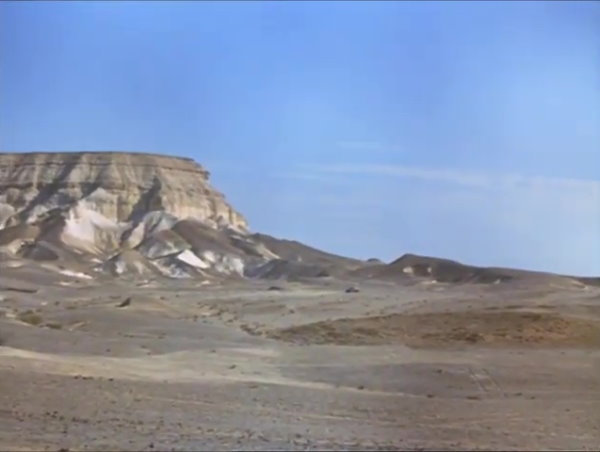
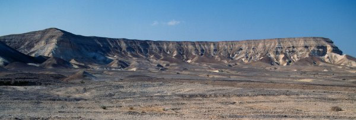
Dead Sea Lookout - Highway 31, the
Arad-Sodom road
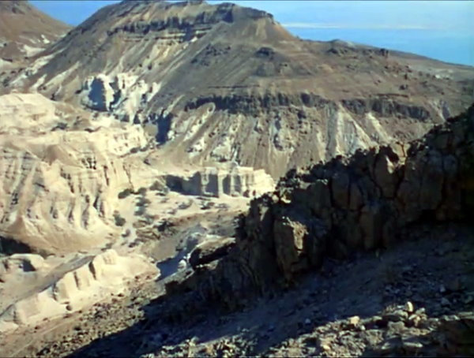
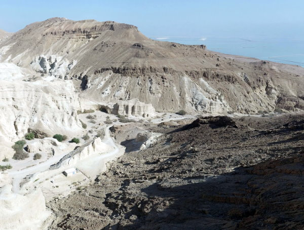
Wadi Zohar (around the site of Fort
Zohar), visible from Highway
31, the Arad-Sodom road
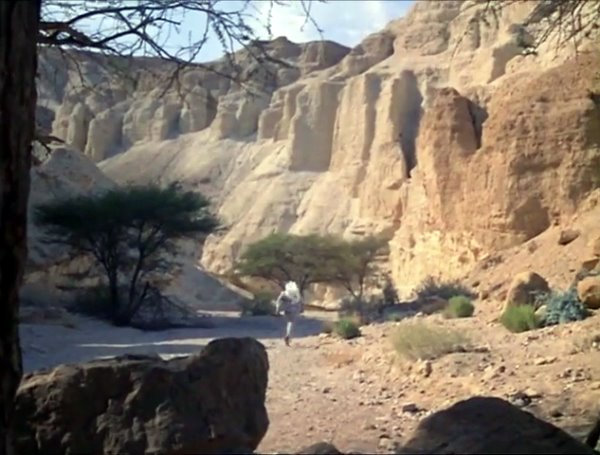
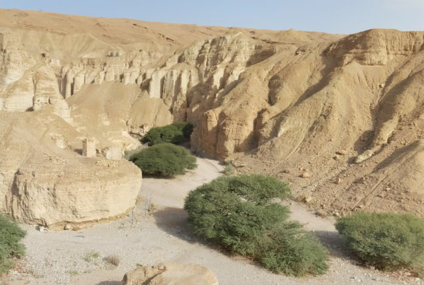
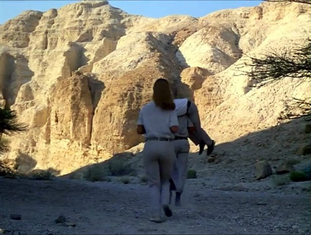
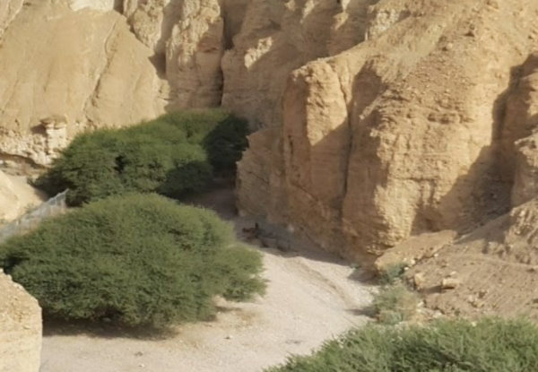
March 17th - Identified by David
Wilson
Plaza de la Catedral (was Plaza De
Pio XII), Cadiz, Spain
DANGER MAN: The Man With The Foot (Jeremy
Summers: 1966)
John Drake goes to meet Derringham at a cafe in Olot, the local town.
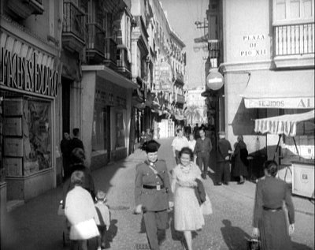
March 16th - Identified by Greg
Chapman
M12: Aldenham Road, Letchmore Heath
StreetView
U.F.O.: The Responsibility Seat (Alan
Perry: September 1969)
Once he gets her in his car, Ed Straker gets the truth out Jo Fraser
(Aldenham Road opposite Aldenham School).
UFO: Court Martial (Ron Appleton:
October 1969)
Ed Straker drives Alec Freeman, in his car, to Foster's appartment
(Aldenham Road opposite Aldenham School).
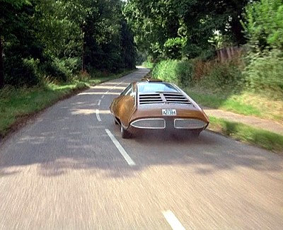
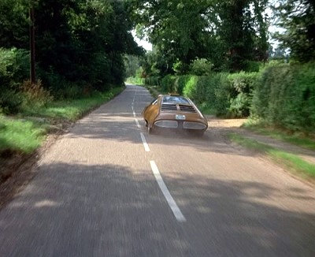
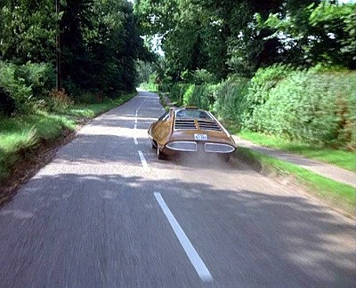
Some added detail -
THE BARON: Samurai West (John
Moxey: ??)
Raymond Huntley follows Asano and Samantha back to their home (Hampstead Lane going into
Courtenay Avenue). The Baron visits Asano the following
day to ask about his role in Japanese prison camps.
(Idenified by Geoff
Dodd, December 2006)
Asano's
house was 'Three Pines' and its annex, 'Pine Lodge,' on Courtenay
Avenue, NW9. According to Googlle Earth the house stood there until at
least 2005 after which it was demolished and a new house, retaining the
name 'Three Pines', was built in its place.
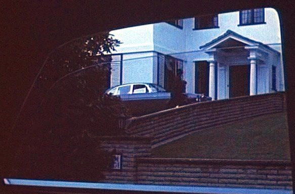

Q35: Aldenham Reservoir causeway,
Elstree Road/Watford Road, Elstree
THE BARON: Something for a Rainy Day (Cyril
Frankel: November 1965)
After
the leaving the caravan site, John Mannering, Cordelia Winfield and
Anne Seldon leave in a Citroën looking for something familiar.
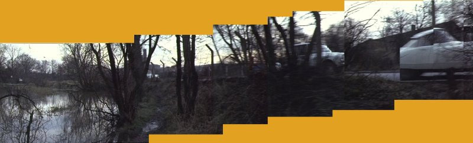
F56: Harefield Road, Rickmansworth
THE BARON: Diplomatic Immunity (Leslie
Norman: August 1965)
Mannering
and Cordelia are driven (along Harefiled Road) and taken to a timber
yard (W.H. Walker and Bros. Timber Merchants, Frogmore Wharf, now a
supermarket). They are sealed inside the car and gas is introduced.
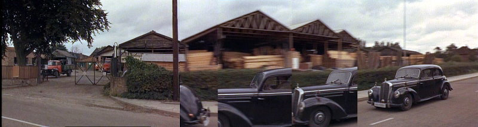
March 6th - Thanks to Rick
Davey, Gareth
Hughes and Tina
Jerke
East Cliff Sands aka Sunny Sands
Beach, Folkestone, Kent
THE PRISONER: The Chimes of Big Ben (Don
Chaffey: December, 1966)
After
dark, Number Six meets Nadia on the beach (East Cliff Sands aka Sunny
Sands Beach) and they construct their home-made dinghy.Once complete,
they push it out to sea.
THE PRISONER: Dance of the Dead (Don Chaffey:
December, 1966)
Exhausted,
after his encounter with Rover, Number Six walks up the beach to some
rocks (begining of harbour wall on East Cliff Sands aka Sunny Sands
Beach) and sits down.
Google StreetView Link
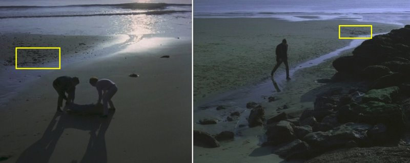
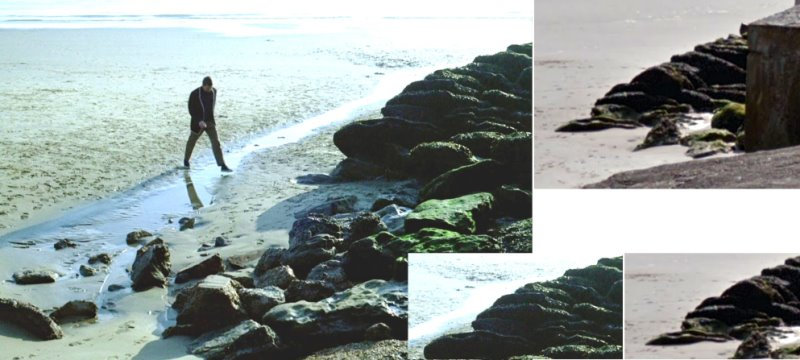
July 15th (2005) - Identified by Geoff
Dodd - sorry for taking so long to enter this into the
guide.
Edgeware Road, The Hyde, Brent,
London, NW9
THE PROTECTORS: King Con (Jeremy Summers: 1972)
Alan Sutherland and Cribbs are looking around a Jaguar dealership (H R Owen, 363 Edgware Road,
redeveloped) when the Contessa and Chino arrive. They
watch as the Contessa leaves in her Rolls and attempt to follow.
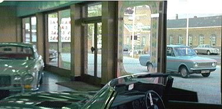
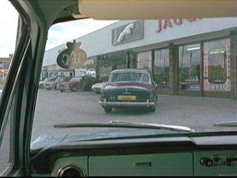
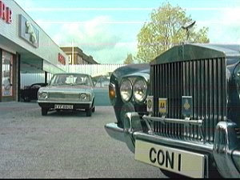
March 10th - Identified by Donna
Caines Doyle from the Unidentified photos of the British
Isles Facebook Group
Holywell, County Fermanagh, Ireland
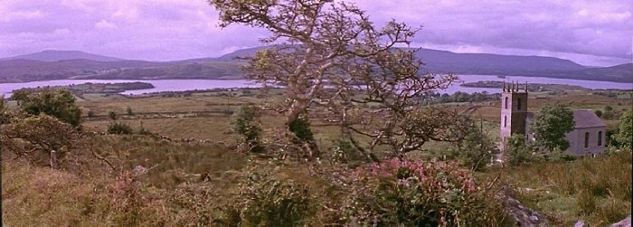
THE SAINT: Little Girl Lost (Roy Baker:
Aug/Sep 1966)
The Saint is on holiday in Ireland (stock footage of St Patrick's
Church, Holywell).
March 9th - Identified by Greg
Chapman
H7: Black Park Lake, BlackPark,
Iver Heath, Buckinghamshire
THE ZOO GANG: African Misfire
Picard shows Naganda’s troops on a training exercise.

March 8th - Identified by Zeania
Squires on the 'Unidentified Photos of the Briitish Isles'
Facebook group.
DANGER MAN: Shinda Shima (Peter Yates: March
1966)
Seasalter, Kent - John
Drake (Patrick McGoohan)
is taken to a small motor boat where a masked man is waiting to take
him to the island of Shinda Shima. Later Drake and Miho Nakamura (Yoko Tani) manage
to escape Shinda Shima and swim to the mainland.
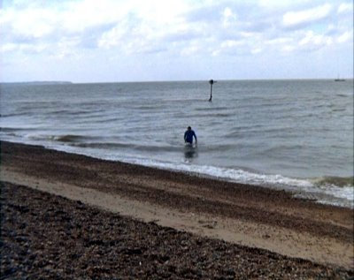
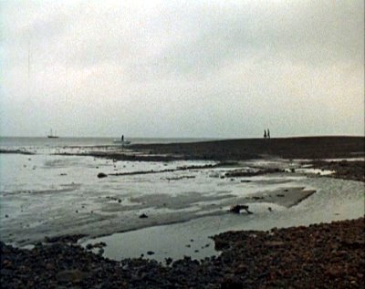
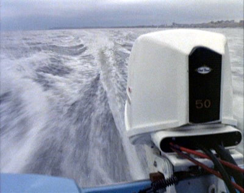
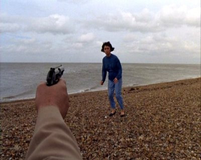
March 8th -
Priory Hospital, Roehampton, London,
SW15
THE NEW AVENGERS:
To Catch a Rat
(James Hill: Summer 1976)
Steed
(Patrick Macnee) watches from the college as Gilpin is attacked by
Gunner. Quaintance (Robert Fleming) and Steed rush out to help.
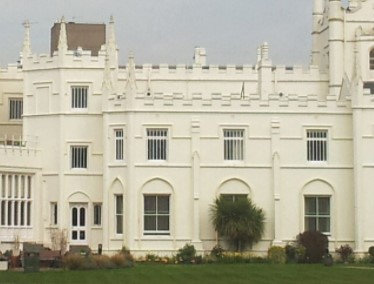

March 6th - Identified by Harry
Hicks on the 'Unidentified Photos of the Briitish Isles'
Facebook group.
Abersoch, Gwynedd
UFO: Reflections in the Water (David
Tomblin, 1970)
Straker watches scenes of this "Cornish fishing village" in the studio
cinema.
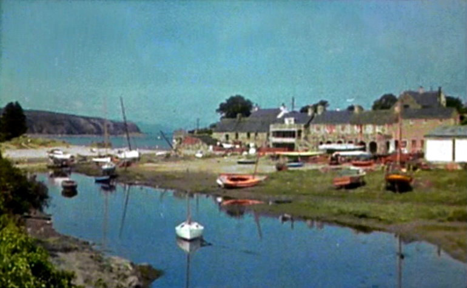
March 1st - Identified by Geoff
Dodd (with a nudge from Steve Cook)
H79: Hollydene House,
Fulmer Common Road, Fulmer
THE NEW AVENGERS: Angles of
Death
(Ernest Day: Summer 1977)
Gambitand Steed go to interview Manderson at his house, but
his wife Sally (Melissa
Stribling) tells them that her husband
is away on official business
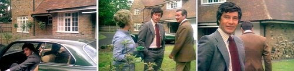
February 28th - Identified by Steve Cook
H78: Black Firs, Fulmer Common
Road, Fulmer
THE NEW AVENGERS: Angles of Death
Briantern
Health Farm
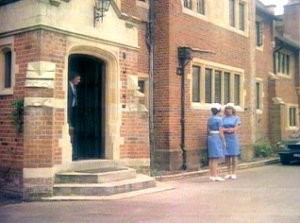
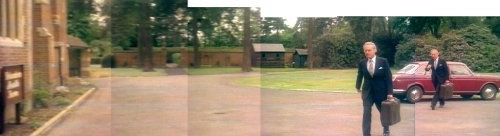
Also seen in:
THE PROFESSIONALS - Long Shot (1978)
MINDER – Guess Who’s Coming to Pinner (1991)
February 13th - Identified by Gareth Hughes
Camber Sands, East Sussex
THE PRISONER: Arrival (Don Chaffey: September
1966)
As
Number Six (Patrick McGoohan) attempts to leave The Village in a
Village taxi, Orange Alert is called, and Rover blocks the vehicle’s
path. Rover strikes and Number Six is thrown from the taxi. He attempts
to fend off Rover, but he is smothered and falls to the ground. Rover
bounces in triumph on the prone body of its victim.
THE PRISONER: Dance of the Dead (Don Chaffey:
September 1966)
Under
the cover of darkness Number Six (Patrick McGoohan) runs to the beach
where Rover confronts him. Number Six runs down the beach, but Rover
stays ahead of him every step of the way. Exhausted, Number Six drops
to his knees and Rover rushes away.
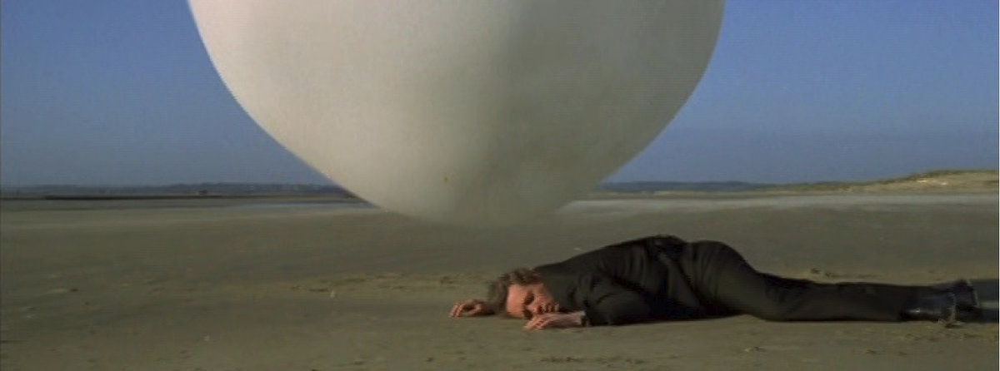
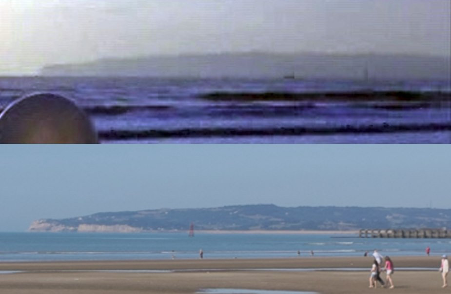
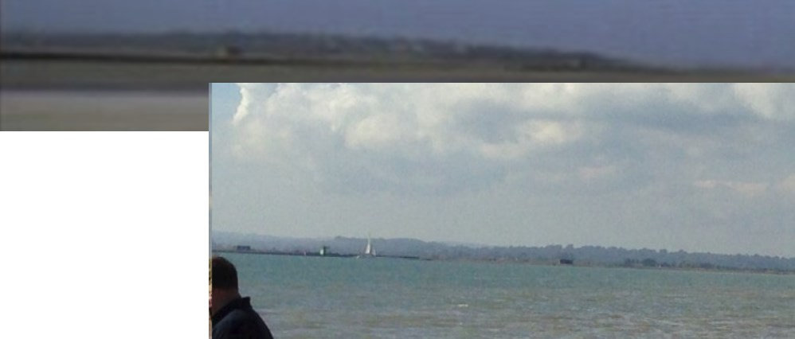
January 2nd - Identified by Jayne Barraclough
from the Unidentified photos of the British Isles Facebook Group
Newcastle, County Down, Northern
Ireland
THE
CHAMPIONS: The
Night People (Robert Asher: June 1967) - Establishing
shot of Cornwall just as Craig and Richard arrive at the village to
look for Sharron.
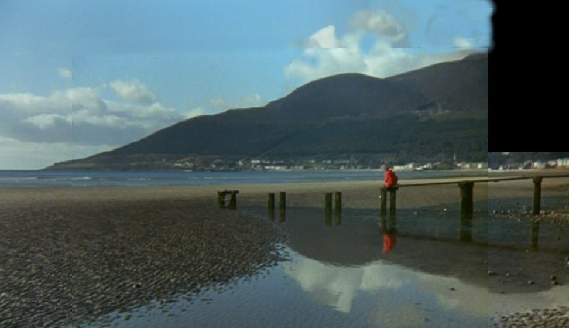
2020
16th July
'THE ADVENTURER' stand-alone location guide added

10th July
Mark Barry
Old Windsor, Berkshire
THE SAINT: The Fast Women (Leslie Norman:
September 1966)
Karl
Tordoff books into a hotel near Brands Hatch (The Bells of Ouzeley,
Straight Road). After he is tracked down by The Saint, Tordoff escapes
in his car closely followed by Templar in the Volvo.
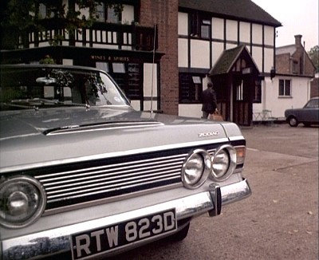
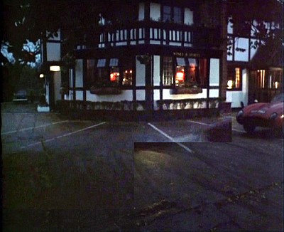
16th January
RANDALL AND HOPKIRK: You Can Always Find a Fall Guy
Craig Robins
Westminster Hospital, Dean
Ryle Street, SW1 (redeveloped)
15th January
Geoff Dodd
JASON KING: A Kiss For A Beautiful Killer
170A Queens Gate, SW1
2019
Rhett
Burns has identified more footage from RANDALL AND HOPKIRK: When Did
You Start to Stop Seeing Things? as being on Blackhorse Lane.
-
updates needed.
November 8th
Geoff Dodd
Clarendon Court, Staverton Road, Wilesden Green, North West London, NW2
THE
SAINT: The Set-Up (Roy Baker: October 1964) - Simon
watches
as Corrigan arrives home. He enters the building, but Orping arrives in
his car soon after.


21st August
Sietse Postma
THE PERSUADERS! The Ozerov Inheritance
Place Sy-Vieuxville, Saint-Cergue, Switzerland
After leaving his house to deliver important documents, Professor Ganguin's car is followed by Walther and Dante, in their car.
17th July
Sietse Postma
THE PERSUADERS! The Ozerov Inheritance
Route d'Arzier, 1264 Saint-Cergue, Switzerland (near junction with
Route de la Prangine)
Danny and Brett are taken, in a car, by Princess Alexandra to an unknown location.
123, 1264 Saint-Cergue, Switzerland (near junction with Chemin des
Fontanettes)
On his way to deliver important documents, Professor Ganguin's car
is forced off the road by Walther and Dante, in their car.
13th July
Sietse Postma
THE PERSUADERS! To the Death Baby
Near Centre Pédagogique Planète et Univers (C2PU), Caussols,
France

1049 Route de la Colle, Tourrettes-sur-Loup, France
(E)
11th July
Chemin des Claps, Caussols, Provence-Alpes-Côte d'Azu, France
 (E)
(E)
Chemin des Claps, Caussols, Provence-Alpes-Côte d'Azu, France
 (E)
(E)
19th July
Sietse Postma
'THE PERSUADERS!': 'Powerswitch' (Basil Dearden, June 1970)
Prud'homie des pêcheurs du port du Cros de
Cagnes, Cagnes-sur-Mer, Provence-Alpes-Côte d'Azur

Antibes Harbour, Provence-Alpes-Côte d'Azur
(E)
17th June
Daniel Bauer
'THE PERSUADERS!:' 'To the Death, Baby'
D12, Gourdon, Provence-Alpes-Côte d'Azur

Chemin des Claps, Gourdon, Provence-Alpes-Côte d'Azur


11th June
Daniel Bauer
- VERY well done.
THE NEW AVENGERS: K is for Kill Part 1 - The Tiger Awakes
Le Château des Bouleaux, Route de Précy, Gouvieux, Oise, France


7th June
Daniel Bauer
- well done.
THE NEW AVENGERS: K is for Kill Part 1 - The Tiger Awakes
Rue du Vieux Château, La
Chapelle-en-Serval, Oise, France

11th May
Daniel Bauer
his done some research to identify this shot from 'DANGER MAN': 'A Room
in the Basement' Tricky because the hotel has been enlarged and has
lost some of its prominent features.
Well done Daniel!
Schlössli Hotel (now out of business)
Unspunnenstrasse 8,
3812 Wilderswil,
Switzerland

8th February
Geoff Dodd
with help from Robert
Lewis
THE SAINT: The Rough Diamonds
(Peter Yates: 1963)
St James’s Street, SW1
- After Simon and Barbara Sinclair leave Barbara’s flat, in the Volvo,
they are followed by Rocco an Joe in their Zephyr. This soon turns into
a game of cat and mouse.
(Identified by Geoff Dodd with help from Robert Lewis, February 2019)
29th January
Geoff Dodd
Ebury Street near the junction with Eaton Terrace with the camera sited
at Cundy Street Flats.
MAN IN A SUITCASE: Burden of Proof
Ebury Street, SW1 -
McGill and Faversham return from the casino and later McGill gets a
taxi to Faversham’s place.
2018
14th November
Identified by Neil Rigby
Neil Rigby has sent in this find - seasoned location spotters have been
puzzling over this one for two decades - the best minds in the field
have tried and failed - that is why it is on the first Location
Spotting page in this Guide. So this really is astounding.
THE AVENGERS: Take Me to
Your Leader (Robert Fuest: November 1968)
98 Hamilton Terrace, London NW8
- Steed follows the case's instructions and finds himself outside a
ballet school located in a house at 11 Heston Avenue.
23rd October
Geoff Dodd
THE SAINT: The Saint Steps In (John Gilling
:March/April 1964)
Taxi with Miss Grey in arrives at Quinell’s house for an appointment.
two fake policemen are not far behind and stop her before she can get
to the house. Saint intervenes. Walter Devan is watching and only makes
himself known as the two detectives flee. Simon returns that night to
talk to Mr. Quinell and meets Andrea.
(Identified by Geoff Dodd, October 2018)
M27: 5,The
Avenue, Radlett

2nd September
Identified by Sietse Postma
Piazza Giunone Regina, Rome, Lazio
 (E)
(E)
THE PERSUADERS!: Five Miles To Midnight
Brett Sinclair (Roger Moore) arives at Sidonie's appartment in his DBS, BS1.
1st September
Identified by Sietse Postma
Via dei Funari, Rome, Lazio

THE PERSUADERS!: Five Miles To Midnight
Brusati and his men race through the streets of Rome to the Fancos' appartment where a shooting has been reported.
8th August
Identified by Sietse Postma
Chateau El Masr, Cologny, Switzerland

THE PERSUADERS!:The Ozarov Inheritance
5th August
Identified by Sietse Postma
107 Avenue de Gairaut, Nice, Provence-Alpes-Côte d'Azur

 (E)
(E)
Danny
(Tony Curtis), Brett (Roger Moore), Sidonie (Joan Collins) and
Frank Rocco(Robert Hutton) wait outside the gates to the home of
Count Sangallo.
THE PERSUADERS!: Five Miles To Midnight
5th August
Identified by Sietse Postma
Mont Chauve, near Nice, France
 (E)
(E)
THE PERSUADERS!: Angie...
Angie
Angie tells his friend Danny that he intends to walk to 'freedom' despite the
gun in his hand.
5th August
Identified by Sietse Postma
Mont Chauve overlooking Falicon
The exact track is hard to find

 (E)
(E)
THE PERSUADERS!: Five Miles To Midnight
After
stealing two bicycles and riding two to a bike, Brett Sinclair (Roger Moore)
and Sidonie (Joan Collins) and Danny Wilde (Tony Curtis) and Frank Rocco
(Robert Hutton) make their way down hill.
5th August
Identified by Sietse Postma
Palazzo Missimo alle Colonne,Corso Vittorio Emanuele II, Rome, Lazio

THE PERSUADERS!: Five Miles To Midnight
Brusati and his men arive at the Roccos' appartment to investigate the shooting Gino Franco.
5th August
Identified by Sietse Postma
M114 just entering Falicon, Provence-Alpes-Côte d'Azure
THE PERSUADERS!: Powerswitch
Brett and Pico drive the side road where Julie's car had its accident.
4th August
Identified by Sietse Postma
Route du Mont-Chauve, Aspremont, Provence-Alpes-Côte d'Azur

 (E)
(E)
THE PERSUADERS!:The Gold Napoleon
31st July
Identified by Sietse Postma
Route de l'Aire Saint-Michel Falicon, Provence-Alpes-Côte d'Azur
(E)
THE PERSUADERS!: Powerswitch
Brett and Pico drive the side road where Julie's car had its accident.
17th May
Geoff Dodd
DEPARTMENT S: Spencer Bodily is Sixty Years Old (Leslie Norman: 1969)
Jason manages to steal a box of BHT from Ingrid Von Epsdorf’s house.
L3: British Rail Centre, The Grove, The Grove Park, Grove Mill Lane,
Watford
6th April
Patricia Lewis
it
shows an alpine pass in the Austrian Alps: 46.918200, 10.093439
->
Bielerhöhe, Silvretta, Piz Buin, Gaschurn, Partenen, Galtür ->
Austria
I grew up there. The man in the front of the left
pic is Raimund, the caretaker of Hotel Silvrettasee (must be in the
60ies) best regards. Erwin
22nd March
Paul Stroud
Paul Stroud identified this shot of Petticoat Lane looking down
Wentworth Street.
The Human Jungle: Time Check
Stock footage of an east-end market (12:10)
22nd March Geoff Dodd
DEPARTMENT S: The Pied Piper Of Hambledown (Roy Ward Baker: May 1968)
Well End Road
Aboard Jason’s Bentley, Annabelle takes Jason and Stewart to see where
the missing can of white paint was used.
20th March - Geoff Dodd
"it’s
no longer a through road but you can see the bricked up windows on the
upper floor of the pub on Crawford Street, as well as the distinctive
window surround of the building opposite"
DEPARTMENT S: Soup of the Day (Leslie Norman: Spring 1969)
Crawford Street, W1: Villers and Greene drive to Rupert’s boutique. (no
longer a through road)

22nd February - Julian Manhood
"I
have finally managed to locate - after a few weeks of searching - Mrs
Henska's house from the episode 'Carpathian Eagle' on location page 93.
I can confirm that is now part of The Chiltern Hospital which is
private and situated on London Road, Great Missenden, Buckinghamshire.
"The
area has changed quite a bit since 1980, with a car park and hospital
entrance now replacing the area the stakeout van was parked next to the
cottage. However, the church like building and the red tiled building
opposite are still there today, but are enclosed together with a modern
looking building."
HAMMER HOUSE OF HORROR: The Carpathian Eagle (Francis Megahy: 1980)
The
Chiltern Hospital, London Road, Great Missenden, Buckinghamshire -
Detective Inspector Clifford (Anthony Valentine) and Natalie (Suzanne
Danielle) arrive at the house of Mrs. Henska.
(Identified by Julian Manhood, February 2018)
7th
February - Paul Stroud
Windsor and Eaton Central.
The
first two pictures of the race in the Lost Hours are the same shot; the
camera swinging around from Lower John Street to Golden Square.
I’ve included some shots of the paper cup factory in case it rings a
bell.
6th
February - Paul Stroud
This next sequence starts off here and continues in Central London.
The Lost Hours (from 44:57)
Lower John Street This clinches it, really, after the documentary
evidence below.
Golden Square
History of Dormeuil. Scroll down to 1926 for Golden Square
ABC Cinema Head Office. You can see the Dormeuil building to the left.
Here's the Granada building in Golden Square.
4th
February - Mike Richardson
E1- Hughenden Church, near High Wickham.
St Michael and All Angels Church, in the area known as Hughenden, near
High Wickham.
This
appears in the opening sequence in the sixties spy film A Dandy in
Aspic, where the funeral is taking place for the British Intelligence
agent called Nightingale.
It also appears in the opening sequence for Johnny English starring
Rowan Atkinson.
26th
January - Geoff Dodd
DEPARTMENT S: The Duplicated Man
I’ve
got another location for that episode - that of the antique shop.
Because of the editing it looks on screen like it’s Flask Walk but it’s
actually on the other side of the High Street at Perrin’s Court. You
can see The Spinning Wheel restaurant on the other side of the Lotus:
which
was also seen in the film Les Bicyclettes De Belsize and was at number
10 Perrins Ct. Also, when the Russian agents leave you can see that
there’s a link between the two sides of the road at first floor level:
....which Flask Walk doesn’t have. Department S move off from Flask
Walk as the address can be seen above the blue doorway:
but the end of the road doesn’t have that linking:
Flask Walk, NW3
Perrin’s Court, NW3
DEPARTMENT S: Duplicated Man (Paul Dickson: March 1969)
Annabel
arrives at an antique shop in her car looking for answers. Later
Stewart, Jason and Annabel, arrive at the Sloan Street Antique Shop run
by Andrew Heywood in Stewart’s but three Russians are already there.
The Russians leave when Andrew Heywood gives them the slip.
24th
January - Paul Stroud
THE HUMAN JUNGLE: Run with the Devil
Park Lane (03:07)
Hewitt walks away from Speakers' Corner towards Avenfield House, Park
Lane
Kensington Park Gardens (17:12)
Dr Davis and Jane Harris driving to Hewitt's wife's shop.
Ladbroke Gardens (18:58)
Dr Corder driving Hewitt to his wife's shop.
21st
January - Geoff Dodd
Chester Close North
2017
21st
December - Geoff
Dodd - very important find.
MAN IN A SUITCASE: All That Glitters (Herbert Wise:
August/September 1966)
Brewery
Yard at number 5 Sheep Street, Stow-on-the-Wold, Gloucestershire
- McGill pays a visit to the offices of The Cotswold Weekly
Chronicle.

19th November - Dave
Bell has spotted this overlooked location from THE SAINT: The Crooked Ring.
THE SAINT: The Crooked Ring
(Leslie Norman: February: 1965)
Old Compton Street, W1/Dean Street,
NW1 - Establishing shot of the location of Grady's Gym.

30th
October - John
Stewart has sent in this image of 'St. Damiens Hospital'
from THE HUMAN JUNGLE: Race With The
Devil. This is the hospital where Corder works when he's
not in Harley Street. There
are odd shots of the same complex in later episodes but all of them so
far are from the same shoot/set up. It's a very sizeable building so
someone might know it.
Geoff Dodd
has identified this as E15:
High Wycombe College of Art and Technology,Queen Alexandra Rd
and Abbey Way in High Wycombe (redeveloped as Buckinghamshire New
University)

30th October - Two appearances
of Beaconsfield Town Hall have been spotted by John Stewart as well
as a old favourite.
THE HUMAN JUNGLE - Fine Feathers (Vernon Sewell, 1963)
F28:
Beaconsfield, Beaconsfield Town Hall -
The exterior of the magistrates’ court
(Spotted by John Stewart, October 2017)
THE HUMAN JUNGLE - Time-Check
(Alan Cooke, 1963)
F28:
Beaconsfield, Beaconsfield Town Hall -
Magistrates’ court (re-use of footage from Fine
Feathers)
(Spotted by John Stewart, October 2017)


THE HUMAN JUNGLE - Fine Feathers
(Vernon Sewell, 1963)
F5: Hall Barn,
Beaconsfield - The country house where Penny's parents live.

25th
October – Another great piece of observation from Geoff Dodd whilst
watching RETURN OF THE SAINT: One
Black September. "Templar is looking in his mirror to see
if they’re being
followed, just before he accelerates through the lights at Hamilton
Terrace,
NW8. These shots were taken on Elgin
Avenue, W9 near the junction with Lauderdale Road and judging
by the pictures, they went in both directions. The second one
is where he’s following the school bus and is
on Harmood Street, NW1, passing the
Camden Centre for Learning. You can see the distinctive ‘Girls’ gate
which
still survives."
RETURN
OF THE SAINT: One Black September
Elgin Avenue, W9
- Templar is looking in his mirror to see if they’re being followed,
just before he accelerates through the lights at Hamilton Terrace, NW8.


RETURN OF THE SAINT: One Black
September
Harmood
Street, NW1 - Following the school bus (near the
junction with Lauderdale Road)
29th August - Jonathan Gibbs
-
THE PROTECTORS: WAM - Part 1
()
Gwandhaus/Schlosshotel St.
Rupert,Gössl , Austria - Harry and Caroline go here for
lunch - when Paul realizes he has been spotted, he calls them.
26th August - Geoff Dodd
DEPARTMENT S: The Perfect Operation
- after Annabel leaves the hospital and is followed we get this view
before she loses them on Allitsen Road
Avenue Road NW8
5th August - Geoff Dodd
Northwood
Squash Club, 22 Chestnut Avenue, Northwood -
Stewart Sullivan (Joel
Fabiani) goes to se general Crawley (Patrick Barr) at his squash club.
He is refused access until Annabelle (Rosemary Nicols) arrives with
news of ‘Operation Groundsheet’.
(Identified by Geoff Dodd, August 2017)

7th July - Aaron Gray
-"I am currently watching the dvd set and during episode 5 'The Lost
Hours' there were a few scenes on the railway bridge outside the
Horlicks factory in Stoke Poges Lane, Slough. The bridge in the episode
was replaced a couple of years ago."
THE HUMAN JUNGLE: The Lost Hours
(Sidney A. Hayers: 1963)
H77:
Horlicks factory in Stoke Poges Lane, Slough:
28th June - Geoff Dodd -
DEPARTMENT S: The Shift
That Never Was (John Gilling: Autumn 1968)
Lysia Street, SW6:
Annabelle is taken by Frank, Johnny and Sam as they shift the tanker
from the Warehouse.
July 22nd
- Pierre
Alfonsi
DANGER MAN: I Can Only Offer You
Sherry (George Pollock: 1965)
Tripoli, Libya,Near the Martyrs
Square, Omar Almukhtar Road -

1st May - Philip Kenny,
familiar with this location used in FOR
YOUR EYES ONLY, has identified the Metéora in Greece in the JASON KING episode Wann Buy a Television Series.
JASON KING: Wann Buy a
Television Series
The Metéora, Kalabaka, Greece


26th
April - A nice lfind featuring a classic
location. Alan Hayes
and Al Samujh
have tracked down another filming location from the recently descovered
THE AVENGERS episode Tunnel of Fear.
THE AVENGERS: Tunnel of Fear
Thames Road, leading to Strand on
the Green, London W4
Harry Black and Keel race through the darkened streets of Southend
towards a marina, where they board a boat.
(Spotted by Alan Hayes and Al Samujh, April 2017)


Comparison shots from MAN IN A
SUITCASE: Who's Mad Now


April 29th - Some very nice
pin-point Maltese locations from Pierre
Alfonsi today. Thanks once again to Pierre for
his dedication in tracking these down.
THE PROTECTORS: Ceremony for
the Dead
Junction
near the blue wall and grotto viewpoint, Triq Wied iz-Zurried, Malta:
With the real kidnappers aboard the ambulance races down the hill to
the harbour.
Identified by Pierre Alfonsi, April 29th 2017
THE PROTECTORS: It was all Over in
Leipzig (Don Chaffey: Summer 1971)
Kalkara
and Bighi Hospital as seen from the Grand Harbour, Valetta, Malta
- Jim Palmer (Ron Randall) arrives in the harbour and makes
his
way towards The Dolphin, The Contessa’s yacht
Identified by Pierre Alfonsi, April 2017

THE PROTECTORS: A Matter of Life and
Death
Kalkara and Bighi Hospital as seen
from the Grand Harbour, Valetta, Malta
- seen at the end of the episode.
Identified by Pierre Alfonsi, April 2017

25th April - An
astounding from Geoff
Dodd who spotted a clue in THE
PROTECTORS: Trial
and used it to find a location we've been lookinfg for since the very
first days of The Guide. Unfortunately most of the recognisable
structures have been redeveloped in last few years - I think the tree
has survived. I think I can speak for everyone involved with the site
when I say, well done Geoff!
THE AVENGERS: A Surfeit of H2O
(Sidney Hayers: )
N29: Kendal's Hall, Radlett Prep
School, Watling Street, Radlett (redevelloped)
Steed (Patrick Macnee) and Mrs. Peel (Diana Rigg) arrive outside
the home of Jonah Barnard in a Mini Moke. Here Steed tells Mrs Peel
about the
mysterious weather conditions. Later Steed returns to Jonah’s house
expecting
to meet Mrs Peel. At the end of the adventure Steed bids farewell to
Jonah and
Mrs Peel drives off with Steed in the Moke.
Identified by Geoff Dodd, 25th April 2017

Mrs Peel is sent by
Steed to visit Eli Barker at his home.
3rd February - An
excellent suprise today from Andrew Pearce who
has identified a long sought after location from 'The Baron.'
THE BARON: The Seven Eyes of
Night (Robert Asher: April 1966)
C28:
Forte Post House Hotel, Hemel Hempstead (site
redeveloped as a Holiday Inn) - John Mannering is in France to buy "The
Seven Eyes of Night". As he arrives in his Jensen at this motel and is
watched by Jeff Walker and Vevel who later attempt to steal the jewels
from Mannering.
Follow
this link for a confirmation of these lamp posts.
5th February - Some
more sterling work from Paul
Stroud has manged to track down some STRANGE REPORT locations in
Belgrade.
STRANGE
REPORT: 7931 Sniper: 'When
is your cousin not?'
(Daniel Petrie:
September/October 1968)
Brankov Most, Belgrade – Establishing shot of the city of Lublin.


Western
end of Ulica Terazije, Belgrade
– A Lublin street.


Ulica
Terazije at the junction with Trg Nikole Pasica, Belgrade – More shots of delightful Lublin.


Metropol
Palace Hotel, Bulevar Kralja Aleksandra, Belgrade
– Marisha
drops Strange and Hamlyn Gynt off at their hotel.


2016
12th December - Thanks
go to Ivon Jennery for identifying
a couple of railway shots from THE
SENTIMENTAL AGENT .
THE SENTIMENTAL AGENT: Express Delivery (Charles Frend)
Royal Windsor Station, Windsor,
Berkshire -

Waterloo Station, SE1
- taken from the Shell Building

12th December - Two very
nice finds from Frank
van den Berg for the THE
ADVENTURER episode Target.
De Omval
: The canal is taken is De Omval and the view is looking
towards De Amstel. In the background can be seen a
big modern
building that the locals called: Apenrots (which is still there!) and
that building is located on Amsteldijk. Unfortunatly the
location
where the foto has been taken has been completly renovated and the
canal as seen, where the boat is, doesn't exist
anymore.
Rokin, Amsterdam: The
houses on the background are number 50,52,54 etc..etc...
24th November - A couple
of intersting finds from the recently descovered print of Tunnel of Fear by Alan Hayes.
THE
AVENGERS: Tunnel of
Fear (Guy Verney, August 1961)
Markham Square, SW3 -
Steed (Patrick Macnee)
exits Keel’s surgery with Puppy
(Juno)
and Harry Black. Puppy is spooked by some children playing and Steed
instinctively goes after the back. Harry takes advantage of the
situation and commandeers Steed’s Rolls Royce, driving off into the
distance (towards
King’s Road).
THE
AVENGERS: Tunnel of Fear
(Guy Verney, August 1961)
Southend Pier and Kursaal,
Southend-on-Sea - Establishing shots of holiday
makers enjoying the beach, rides and other amusements at Southend-on-Sea (stock footage).
31st July - We've been
waiting for this GIDEON’S WAY
location for a very long time and at last Andrew Chilcott has
found it.
"The warehouse from
which the van is emerging belonged to Charles Kinloch & Co in
Back Church Street, London E1. We
see the van has turned right and is driving southwards along Back
Church Street. It is about to pass the junction with
Ellen Street to its left and Hooper Street to its right.
There
has been redevelopment but the warehouses are still there today."
GIDEON’S WAY: The White Rat (Roy Baker, August
1964)
Back Church
Street, London E1 – The West End Fur Co. – Mickey Keston
(Ray McAnally)
is robbing the factory with the help of Yob (David Gregory), After
knocking out the watchman they make their escape in a van.
(Identified by Andrew Chilcott, July 2016.


22nd July - Some more
great international finds from Paul Stroud. This time Venice in JASON KING: The Stones of Venice.
Ponte Maria Callas, Venice, Italy
- The path leading over the bridge is the Fondamenta de la
Fenice
Rio de l' Albero, Venice, Italy

Canal Grande from Riva del
Vin, Venice, Italy

14th July - Another THE ADVENTURER location
from Andrew
Chilcott.
THE ADVENTURER: Skeleton in the
Cupboard
Hendon Cemetery and
Crematorium, Holders Hill Rd, London NW: The funeral of
Professor John
Ballard. Karen Ballard (Sylvia Simms) is supported by Sir Richard
McKenzie (Richard
Vernon), Master of the College, and Gene Bradley (Gene Barry) who
was to investigate Ballard’s misappropriation of funds.


www.geograph.org.uk/photo/3378930
11th July - Some
excellent finds from Andrew
Chilcott.
All these locations have been very difficult to track down due to
modern development. This is great selection of told-timers finally
knocled off.
THE SAINT: The Lawless Lady
Kilburn Park Road, NW6
- Looking north-eastwards along Kilburn Park Road from its junction
with Cambridge Road.

GIDEON’S WAY: The Thin Red Line.
Leidsekade, Amsterdam
- The original view must therefore have been shot from the
Nassaukade
across the canal, somewhere at the level of the junction of that street
with Derde Helmersstraat.

GIDEON’S WAY: The Thin Red Line
Leidseplein, Amsterdam
- The building with the sensitively-designed advert atop the
roof
for
Nescafe is on the corner of Leidsestraat and Korte Leidsedwarsstraat.
'Flowershop Ivy' (whose VW van is in the original image), is still in
business today, just down the road.

27th May - Antother JASON KING: Every Picture Tells a Story
find from Paul
Stroud
JASON KING: Every Picture Tells a
Story
Ma Tau Chung Road, Kowloon
- Towards the roundabout. The oriental building is still there
and
marked as Holy Trinity Cathedral. Even the football ground and
basketball courts are still there. The close-up is on the Red
Apple Reesturant on Boundary Street.


26th May - Antother set of JASON KING finds from Paul Stroud
JASON KING: Every Picture Tells a
Story


Hong Kong Harbour, across Causeway Bay
At two o'clock on this picture some of the buildings match,
particularly the ones up the hill which are still there.

On
the right of your picture you can see two long and short buildings
end-to-end. The cathedral appears from behind on the far right. To the
left of all this is Government House surrounded by greenery.
I'm not sure how you'd describe this. Panning west from Central?

Also SHIRLEY'S WORLD: Figuratively Speaking
Hong Kong & Kowloon Wharf & Godown Company in big
letters is along Gateway Blvd
Admittedly tiny, but you can make out the central building here on the
left.
They
came thick and fast in this episode. I’ve got one of Aberdeen Harbour
at 35:00 showing the same pier as seen in Follow That Rickshaw, Shum
Wan Pier.
19th May - More JASON KING finds courtesy of Paul Stroud
JASON KING: All that Glisters… Part Two
North on the 405 (San Diego
Freeway), Los Angeles - We’re just further up the 405 from
last time, still heading north.

Piazza Barberini, Rome
-

12th May - Paul Stroud
JASON KING: All that Glisters… Part One
Avenue Foch - De Brion
getting out of his taxi and into Luca's car is the opposite side of the
Arc in Avenue Foch.

North Beverly Drive, Beverly Hills
-
11th May - Paul Stroud
JASON KING: All that Glisters… Part One
405 (San Diego Fwy) -
We're heading north o. This first
sign gives the instruction for Santa Monica, while 0.8 miles further up
is a sign giving us the slip road to the Imperial Highway. The actual
location is likely to be the second one.

El Camino Real (Route 101) -
Travelling south-east on El Camino Real (Route 101) this sign is
the same with Union Ave replacing Belmont Ave. One forks off the other
so this is likely to be the same place. The bridge is Rosemont Avenue.

Wilshere Blvd cutting through
MacArthur Park , LA -

Harbor Freeway from where it meets
N 3rd
Street - The lone building now has company but
you can just see it
peeping out to the right.


6215 Sunset Boulevard
-

Sunset Boulevard corner
seen from Argyle Avenue -

Hotel Lancaster in Rue de Berri
- He's aiming
his shot at the Chinese Embassy, Rue Washington. Here's another 3D
model.

Notre Dame Cathedral -
same shot in Toki
Av des Champs Elysées
- approaching the Arc on the way to the Napoléon Hotel.
La Belle Férronnière is in Part Two, but it is prominent in
Part One from 36:30
6th May - Paul Stroud
JASON KING: To
Russia with Panache
Bolshaya Sadovaya Ulitsa at the
junction with Tverskaya Yamskaya Ulitsa -


5th May - Paul Stroud
JASON KING: To
Russia with Panache
Red Gate Administrative Building on
Sadovaya-Spasskaya Ulitsa, Moscow, Russia -

Leninsky Prospekt
- The apartment blocks are to the south-west of Moscow along Leninsky
Prospekt. I think we're looking north-east from the corner with
Lomonosovsky Prospekt.

29th April - Paul Stroud
JASON KING: Uneasy Lies the Head
Eyüp Sultan Mosque (a long way from the sharp end of Istanbul at
41.047947, 28.933786)

27th April - Paul Stroud
JASON KING: Uneasy Lies the Head
Unknown 4 - Boulevard Saint Germain passing Rue Danton
26th April - Paul Stroud
JASON KING: Toki
Cathedral de Notre Dame, Paris,
France -
La Place Blanche on the Boulevard
de Clichy -

13th April - Hard in the
heels of his previous find, another one from JASON KING: The Constance Missal,
by Paul Stroud.
A tricky one because a new line and platforms have been built on the
road where Jason is walking. Thankfully the structures of the old
platfrom remain.
Montreux Station -

14th April
- I know how hard this must have been to find because I've searched the
banks of he lake round Montreux Station for many hours looking for this
as well. Thankfully Paul
Stroud has keener eyes or more patiance than I.
From JASON KING: The
Constance Missal,Lord Barnes’ place (which is now
an estate agent’s)
Chemin du Port-de-Bellerive 38,
1245 Collonge-Bellerive, Switzerland -


8th April - More
interesting finds from Paul
Stroud - "A few from JASON
KING: Uneasy Lies the Head, plus a bonus:"
The Blue Mosque, Istanbul
Market at Eminonu , Istanbul
Hotel Normandy, Rue de l'Echelle,
Paris


THE PERSUADERS!: The Man in the Middle
(Leslie Norman: 1971)
Hotel Normandy, Rue de l'Echelle,
Paris - Back at their hotel in Rome Brett, Danny and
Archie celebrate the caprure of Price
28th March -
From Geoff Dodd
an obsucre, and difficult to identify location from MAN IN A SUITCASE: Essay In Evil. He confirmed his
identification with shots from THE
NEW AVENGERS and STRANGE
REPORT.
MAN IN A SUITCASE: Essay In Evil (Freddie Francis:
June 1967)
H21, Iver Grove -
Lucinda
Masters is thrown out of the house by Crick.
18th March - More
intrenational finds from Paul
Stroud.
JASON KING:
A Page before Dying
Breitscheidplatz, Berlin
UFO: Confetti Check A-O.K. (David
Lane: November 1969)
Queen’s Building, London Heathrow
Airport (now demolished) - Ed Straker and Mary are about
to leave on their honeymoon.
London Heathrow Airport
- As a plane takes off Mary Straker leaves the terminal without her
husband
JF Kennedy Airport -
Ed Straker flies to New York to plead his case for the funding of
S.H.A.D.O.
United Nations, New York
- Ed Straker pleads his case for the funding of S.H.A.D.O.
N7, Oaklands College, Elstree Way,
Borehamwood featured in this episode has been demolished.
Last seen
October 2009.
10th March - Our regular
man of thee world, Paul
Stroud, has been on his travells agian to the wold of
Jason King and has come back with scoops from Buenos Aires and Venice.
JASON KING: A Kiss for a Beautiful Killer
Plaza de Mayo, Buenos Aires


Plazoletta 11 de Junio de 1580,
Buenos Aires

Plaza de Mayo, Buenos Aires

JASON KING: As
Easy as A.B.C.
Rio del Vin in
background Hotel Danielli on the left

Canal Grande - Nearest building is
Galleria Giorgio Franchetti, Calle de la Ca' d'Oro

Calle Scaletta bridge Rio di San
Lio
23rd February - I can't express
how impressed I am with Phil
Brown's detective work in tracking down this location.
DEPARTMENT S:
The Pied Piper Of Hambledown
- Tilbury Docks, Tilbury, Essex
Phil
Brown: "If you study these images, you may detect that these are in
fact two different vessels - note the superstructure around the stern
of each.

"This
is the P&O cargo liner; MV Strathbrora newly built in 1967, one
of
three sister vessels known as the "Super Straths”. It was basically a
cargo vessel which could accommodate a small number of fare paying
passengers - usually on a one way ticket.


"Although
this vessel appears to belong to the same shipping line, it is not.
This is the MV Arlanza one of the last vessels operated by the Royal
Mail Lines. It too was a cargo liner as described above. Both
Strathbrora and Arlanza operated from Tilbury Docks in London, so this
is almost certainly the location you are seeking and where the film
unit captured this footage."
28th January - Paul Stroud
JASON KING: Flamingoes only Fly on
Tuesdays
Hotel Nixe Palace, Avenida Joan
Miró, Palma de Mallorca -
27th January - Paul Stroud
JASON KING: Flamingoes only Fly on
Tuesdays
Calle del Cristo, San Juan, Puerto
Rico -

A.H.Riise Mall, St Thomas, US
Virgin Isles -
King Street, Kingston, Jamaica
(opposite the Bank of Nova Scotia) -
JASON KING: A Deadly Line in
Digits
New Scotland Yard, Broadway
-
Royal Garden Hotel, Ken High Street
-

22nd January - Paul Stroud
THE PROTECTORS: The Numbers
Game
Carrer de Rosa Puig,
Begur - Susan Crediton takes the arranged call at a public telephone
kiosk.
Parador de Aiguablava, Platja D'aiguablava, 17255 Begur,
Spain - Harry and Caroline arrive at the hotel where Dr Savage spent
his holiday.
13th January - Paul Stroud is still in a Hong Kong frame
of mind.
DANGER MAN: Sabotage (Peter Graham Scott: )
Nathan
Road, Mongkok, Kowloon, Hong Kong - Paramount Theatre on corner with
Shantung Street with Sun Ya Hotel opposite, later features..
Nathan Road, Mongkok,
Kowloon, Hong Kong - This time facing south. Circular sign
beneath reversed Sun Ya can clearly be seen.
9th January - Paul Stroud kicks
off the new year with another set of 'how does he do it' Hong Kong
locations from SHIRLEY'S
WORLD.
SHIRLEY'S WORLD: Follow that
Rickshaw
Hankow Road into Salisbury Road,
around the Peninsula Hotel
Thomson Road, Hong Kong
- Bernie's flat
Ferry Point, Ferry Street, Hong Kong
- the harbour has been reclamied.

SHIRLEY'S WORLD: Evidence in
Camera
Aberdeen Harbour from Aberdeen
Island -
Kowloon Station, Hong Kong,
China -
Connaught Road Central, Hong Kong -
The former Marine Police
Headquaters, 2A Canton Road - redeveloped
Salisbury Road, Hong Kong
- Where they are standing is now the entrance to
the underground car park at the Peninsula Hotel.

SHIRLEY'S
WORLD: Figuratively Speaking
Humphrey’s Court, 6-6A
Humphrey Avenue, Hong
Kong - now Tonino Lambourghini.
Junction of Lockhart Street and
Luard Road, Hong Kong -
34-38 Lockhart Street, Homg Kong
-
Fenwick Street, Hong Kong
-
The Suzie Wong Bar and Night Club
101 - 105 Hennessy Road, Hong Kong -
The Cave, Luard Road -
2015
17th December - More
SHIRLEY'S WORLD: Follow That Rickshaw
locations found by Paul
Stroud.
Kingston Street, Hong Kong


15th December - More
Hong Kong finds from Paul
Stroud.
SHIRLEY'S WORLD: Follow That Rickshaw
Magazine Gap Road, Hong Kong

Magazine Gap Road, Hong Kong


Magazine Gap Road, Hong Kong

The departure for the Sea Palace
floating restaurant is at Shum Wan Pier Drive

Shek Kip Mei estate, Kowloon - (22º
20' 3.34" N, 114º 10' 7.72" E) the whole area has been redeveloped.